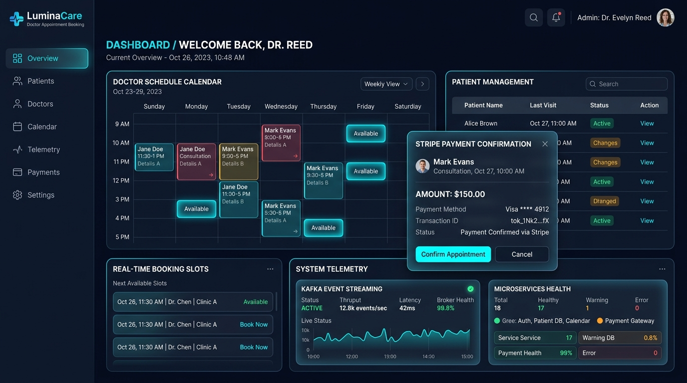
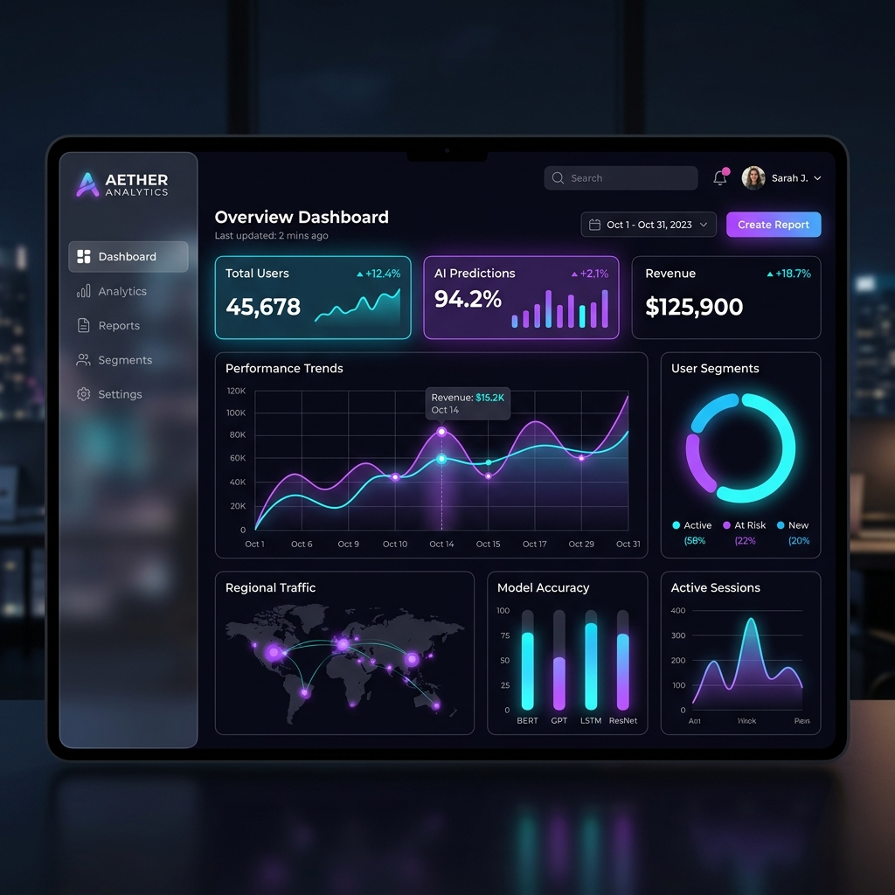
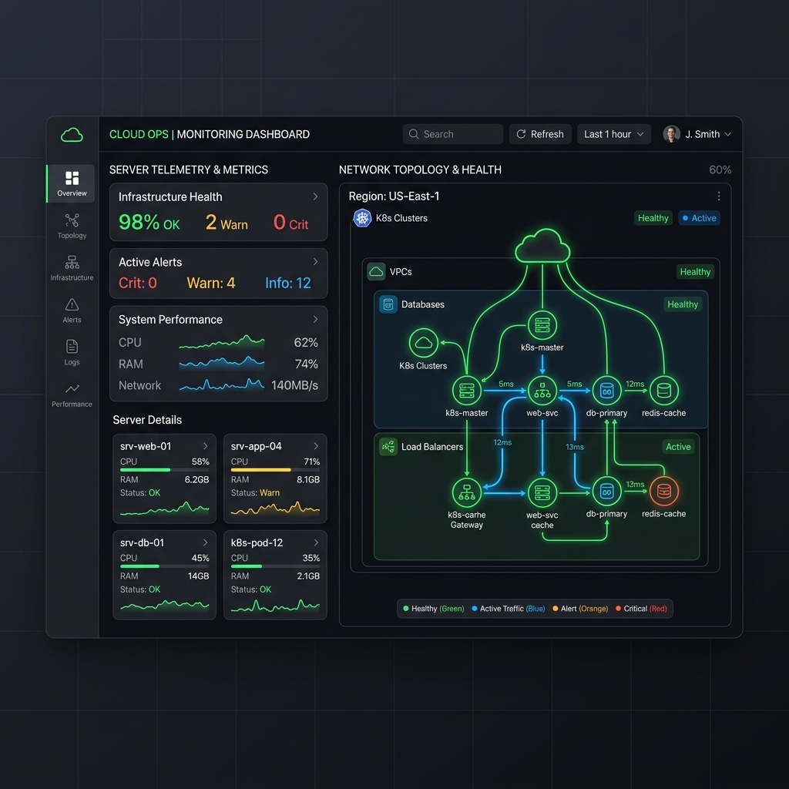
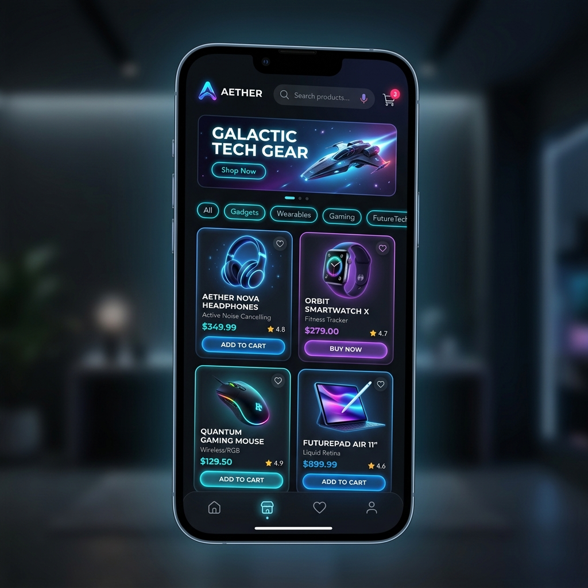

LuminaCare — Doctor Booking Platform
Scalable healthcare platform with 6 decoupled microservices, Eureka discovery, Spring Cloud API Gateway, Redis caching, and Kafka notifications.
Innovative and results-oriented Software Developer with 3.4 years of hands-on experience designing, developing, and optimizing scalable backend applications. Strong proficiency in Java 8/17, Spring Boot, Microservices, Hibernate, and MySQL with practical expertise in building robust RESTful APIs, secure JWT-based authentication, and cloud-native architectures.
Dedicated to engineering resilient, high-throughput backend services and clean architectures.
Innovative and results-oriented Software Developer with 3.4 years of hands-on experience in designing, developing, and optimizing scalable backend applications. Strong proficiency in Java, Spring Boot, Microservices, Hibernate, and MySQL, with practical expertise in building robust RESTful APIs, implementing secure JWT-based authentication, and enhancing performance through efficient database and application design.
Adept in cloud deployment, Docker & Jenkins containerization, and CI/CD pipeline automation, with a proven ability to deliver high-quality, production-ready solutions in fast-paced Agile environments.
Hands-on Industry Experience
Domain-Driven & Event-Driven Systems
Enterprise Security & Authorization
Automated Jenkins & Docker Pipelines
A deep dive into the 12 specialized architectural and engineering pillars I execute on a daily basis.
Hands-on experience in building scalable, high-performance backend applications using Spring Boot, Spring MVC, Spring Data JPA, and Microservices architecture.
Skilled in designing, developing, and consuming REST APIs using Spring Boot with focus on JSON handling, API versioning, exception management, and standard HTTP methods.
Strong knowledge of MySQL, SQL query optimization, stored procedures, and ORM frameworks such as Hibernate/JPA for efficient data persistence and mapping.
Experienced in integrating third-party APIs including payment gateways (Stripe SDK), SMS/Email services (Twilio), and external REST APIs for seamless communication.
Implemented Spring Security and JWT-based authentication for secure login, authorization, role-based access control (RBAC), and session management in microservices.
Improved application performance and significantly reduced database load using Redis caching strategies for doctor schedules, search results, and fast slot lookups.
Worked extensively with AWS cloud services including EC2 compute, RDS managed databases, S3 storage, ECR container registry, and CloudWatch for monitoring.
Developed and automated CI/CD pipelines using Jenkins and GitHub Actions to streamline build, test, and containerized deployment processes.
Focused on clean, maintainable, production-ready code using Lombok, ModelMapper, SOLID principles, Domain-Driven Design (DDD), and standard design patterns.
Implemented unit and integration test suites using JUnit and Mockito, ensuring high code coverage, robust error handling, and production stability.
Proficient in generating comprehensive, interactive API documentation using Swagger / OpenAPI for seamless team collaboration and client consumption.
Experienced working in Agile/Scrum environments, contributing to sprint planning, daily stand-ups, code reviews, JIRA tracking, and creating UML sequence diagrams.
Categorized breakdown of programming languages, frameworks, architecture, databases, cloud, and developer tooling.
An enterprise-scale healthcare microservices ecosystem built using Domain-Driven Design (DDD) and Event-Driven Architecture.

Engineered an enterprise-grade Doctor Appointment Booking Platform handling high-concurrency patient consultations, doctor scheduling, dynamic slot management, Stripe payments, and Kafka-based event notifications.
Secure authentication, registration, password resets using Spring Security & JWT. Implemented Role-Based Access Control (RBAC) for Admin/Patient roles, session persistence, and SLF4J/Logback structured logging.
Full CRUD operations for doctor profiles, specialties, experience, clinic mappings, and availability schedules. Integrated Hibernate/JPA ORM with optimized database queries.
Real-time booking with availability validation and confirmation numbers. Dynamic scheduling, rescheduling, cancellation, and Redis caching for ultra-fast slot access.
Real-time booking engine integrated with Kafka event streaming. Dispatched real-time alerts via Twilio SMS and email APIs for reminders and updates.
Integrated Stripe SDK (sandbox and production) for secure consultation fee transactions, refunds, and instant payment confirmation webhooks.
Multi-filter search by name, specialization, location, clinic, consultation fees, ratings, availability, and online/offline status using Spring Data JPA.
Deployed Spring Cloud API Gateway for centralized routing, auth, and rate-limiting. Configured Eureka Server for service discovery, Zipkin distributed tracing, Spring Boot Admin health metrics, and Kafka event streaming.
Production-oriented backend systems, microservices designs, and cloud infrastructure pipelines.
Scalable healthcare platform with 6 decoupled microservices, Eureka discovery, Spring Cloud API Gateway, Redis caching, and Kafka notifications.

Asynchronous payment processing engine featuring Stripe webhooks validation, Kafka event consumers, idempotency checks, and automated Twilio SMS & Email dispatches.

Centralized gateway architecture with automated service registration, rate limiting, JWT validation filters, Zipkin distributed tracing, and Spring Boot Admin telemetry.

Sub-millisecond data retrieval engine implementing dynamic JPA Specifications, multi-criteria composite filtering, stored procedures, and Redis write-through cache eviction.
Professional track record delivering scalable backend solutions and engineering excellence.
Lead the backend design, development, and optimization of enterprise-grade microservices and RESTful APIs using Java 8/17, Spring Boot, Spring Data JPA, and MySQL. Key contributions include:
Graduated with a strong foundation in core computer science disciplines including Object-Oriented Programming (OOP), Data Structures & Algorithms, Database Management Systems (DBMS), Operating Systems, Software Engineering, and Distributed Cloud Computing.
Interested in hiring me for Java Backend & Microservices roles or discussing backend architectures? Drop me a line!
Bengaluru, Karnataka, India
Software Engineer – Java Developer at iSteer Technologies
Open for full-time Senior / Mid-level Java Backend Developer, Microservices Engineer, and Cloud Backend opportunities.